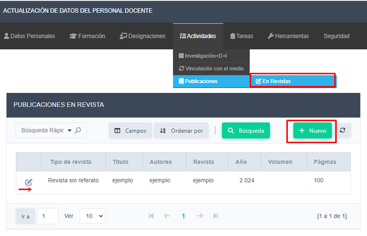

Visualizara las publicaciones en Revistas de las que tiene registro la Facultad. Empleando el botón Nuevo podrá cargar un nuevo registro de su actividad
Una vez completado hacer clic en el botón Agregar, teniendo presente el llenado de los campos obligatorios.